Floyd Mayweather
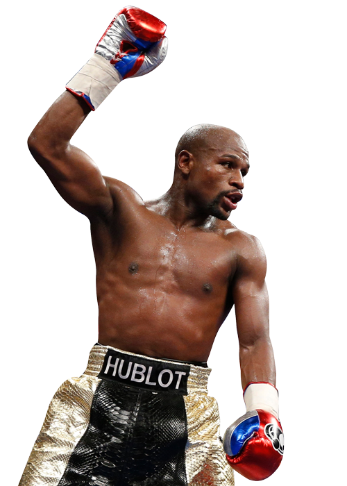
Sempre disposto a sair da aposentadoria para comemorar seus 50-0-0 no ringue, Floyd "Money" Maywather é famoso tanto pelos golpes potentes e a invencibilidade absoluta, quanto por sua ostentação interminávell.
Por bons anos, ele foi o atleta mais bem pago do mundo, e com muita diferença para o segundo colocado. Com 15 títulos mundiais em 4 categorias diferentes.
Apesar da ganância, ele tem uma carreira perfeita dentro do ringue, algo tão inédito, e é considerado por muitos, na comunidadedo boxe, como o maior de todos os tempos.
Manny Pacquiao
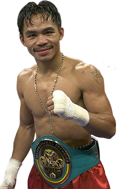
Único campeão mundial de oito divisões na história do boxe, Manny apresentou algumas das performances mais memoráveis do esporte no ringue. Ele aniquilou Oscar De La Hoya em 2008, eliminou Ricky Hatton (em menos de 6 minutos) em 2009 e derrotou Miguel Cotto alguns meses depois.
No entanto, Pacquiao perdeu para Mayweather na "Luta do Século", em 2015 e aí foi colocado a um nível abaixo do adversário. Hoje, Pacquiao é senador nas Filipinas, utilizando a força e a popularidade que o boxe o trouxe para atuar na política.
Muhammad Ali
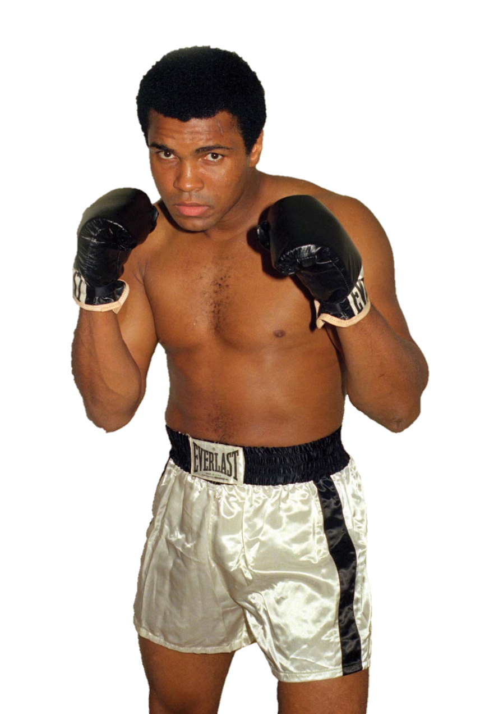
Aclamado por muitos como o maior boxeador de todos os tempos, ele até se denominava “O Maior", Muhammad Ali é absoluto quando se trata de influência política e cultural. No ringue, seu recorde pessoal de invencibilidade foi afetado por uma pausa de quatro anos na carreira, quando o lutador se negou a lutar na Guerra do Vietnã, mas o retorno foi impressionante, no tamanho de Ali.
Ele recuperou duas vezes o título de pesos-pesados e continuou a ser um embaixador da paz pelo mundo. Em 2005, o pugilista recebeu a maior honra civil dos EUA: ele ganhou a Medalha Presidencial da Liberdade, em uma cerimônia na Casa Branca (residência oficial do presidente dos Estados Unidos), em Washington.
Mike Tyson
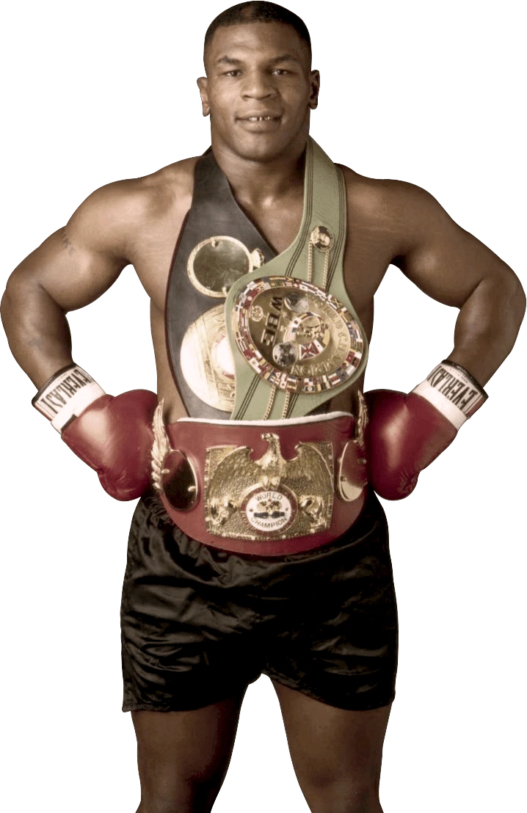
Michael Gerald Tyson, ou simplesmente Mike Tyson, é um dos maiores lutadores de Boxe de todos os tempos e uma das principais personalidades esportivas da história. Atualmente aos 55 anos, Mike Tyson passou do estrelato nos ringues à falência – no início dos anos 2000 -, até se reerguer posteriormente com negócios ligados à cannabis medicinal e sua imagem.
Ao longo da sua trajetória no Boxe profissional, onde foi o campeão mundial peso-pesado mais jovem da história (com 20 anos), além de o primeiro a vencer e defender cinturões simultaneamente, Mike Tyson realizou um total 58 lutas, com 50 vitórias (44 por nocaute), seis derrotas e duas sem resultado. O ex-pugilista é considerado por muitos o dono do soco mais potente do esporte e também um dos melhores pesos-pesado de todos os tempos.
Sugar Ray Robinson
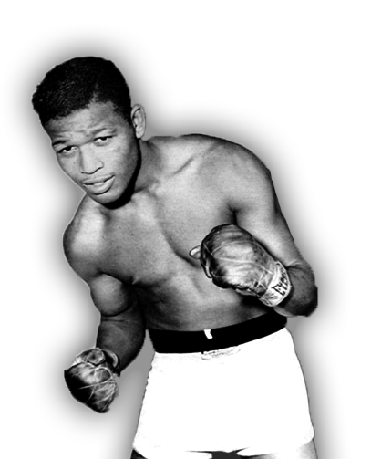
Sugar Ray Robinson, aclamado por Muhammad Ali como "o rei, o mestre, meu ídolo", foi a inspiração para o ranking "libra por libra", criado para descrever um boxeador cuja habilidade no ringue o coloca acima de todos os outros lutadores do mundo. Em qualquer divisão de peso.
Ele foi o campeão dos meio-médios por cinco anos consecutivos (1946 a 1951) e cinco vezes campeão dos médios, entre 1951 e 1960. Certa vez, Sugar Ray Leonard, outra lenda do boxe com o mesmo nome, foi comparado a Robinson. À época, o paralelo foi considerado descabido por muitos. “Alguém disse uma vez que há uma comparação entre Sugar Ray Leonard e Sugar Ray Robinson. Acredite, não há comparação. Sugar Ray Robinson foi o melhor.”
Bernard Hopkins
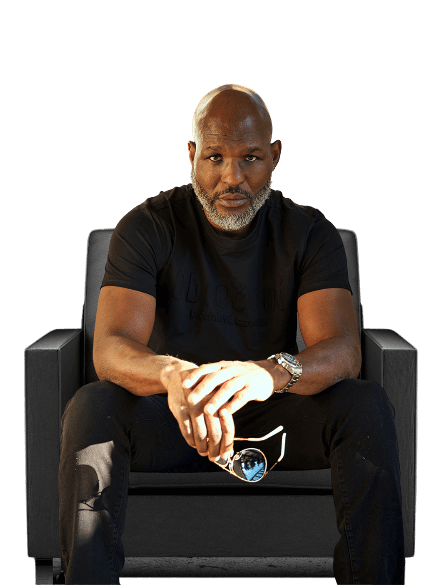
Durante 28 anos de carreira (1988 a 2016), Bernard "The Executioner" Hopkins realizou vários campeonatos mundiais nos médios e leves. Em 2004, quando derrotou Oscar De La Hoya pelo título da WBO, Hopkins se tornou o primeiro boxeador masculino a manter simultaneamente títulos mundiais nos quatro principais órgãos que sancionam o boxe.
Quando ganhou o título dos meio-pesados, em 2011, aos 46 anos, Hopkins se tornou o pugilista mais velho a vencer um campeonato mundial na história da modalidade. O recorde anterior era de George Foreman, campeão do mundo aos 45 anos, em 1994.
Joe Louis
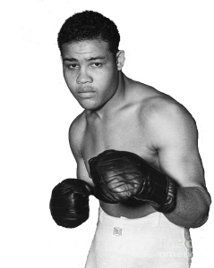
Em 1938, quando venceu o alemão Max Schmeling, ele se tornou um dos primeiros atletas negros a alcançar o status de herói nacional nos Estados Unidos. Mas o legado nos Estados Unidos não se baseou apenas nessa luta.
Louis permaneceu como campeão dos pesos pesados de 1937 a 1949 e, durante esse tempo, defendeu o título 25 vezes. Ele se tornou o campeão mundial mais pesado do mundo e ainda apostou em uma carreira militar, já mais velho, na década de 1940.
Em 1945 alcançou o posto de sargento. Em 1993, o legado virou homenagem: Joe Louis se tornou o primeiro pugilista a ser homenageado pelo serviço postal dos EUA, com um selo comemorativo de 29 centavos.
Archie Moore
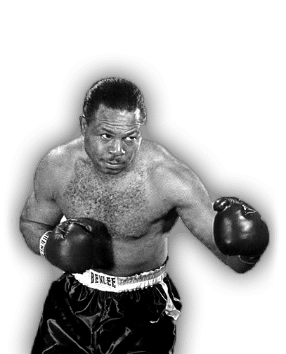
Também conhecido como "Mongoose", Archie Moore é o campeão mundial dos pesos-pesados mais antigo de todos os tempos. Ele também é dono do recorde de número de nocautes (145) em uma carreira como boxeador.
O segredo do sucesso? "Sempre exercitar a mente e nunca acompanhar o tempo". Esta foi uma das frases repitidas pelo norte-americano ao longo da vida. Ele faleceu em 1998, mas foi um dos primeiros a popularizar o esporte e até hoje é respeitado pela comunidade da luta.
Oscar De La Hoya
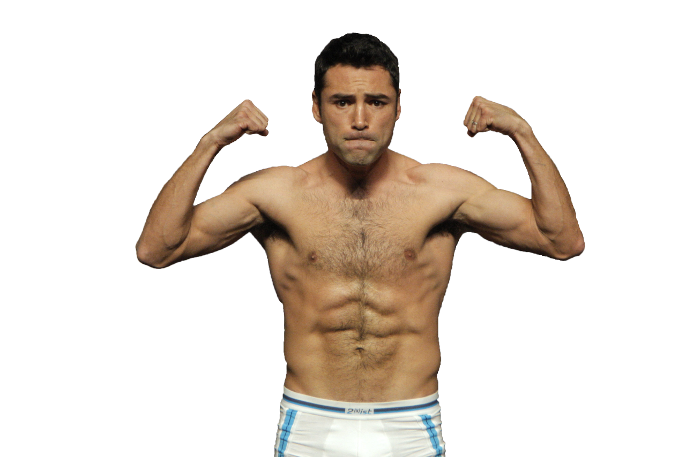
O talento no ringue e a mídia fora dele fizeram com que Hoya vencesse dez títulos mundiais em seis divisões, e se tornasse o a tleta mais rico da história da modalidade no início XXI.
Depois de se aposentar, em 2009, De La Hoya virou um empresário da midalidade e, com a Golden Boy promotions, revelou alguns dos grandes nomes mais recentes do boxe, incluindo Mayweather e Manny Pacquiao.
Em 2018, Hoya foi fundamental para que Canelo Álvarez firmasse um dos maiores contratos esportivos da história. O mexicano fechou acordo com um serviço de streaming de esportes, por cinco anos, no valor de 365 milhões de dólares.
Jack Dempsey
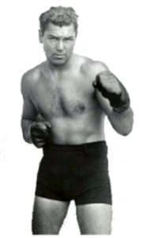
Se apenas uma palavra pudesse definir Jack Dempsey, seria agressividade. O americano foi um dos mais populares boxeadores da história; sua capacidade de lutar tanto como destro quanto como canhoto e seu avassalador gancho de esquerda o tornaram uma das maiores lendas da nobre arte.
Campeão dos pesos pesados, Dempsey nocauteou Georges Carpentier, em 1921, na primeira luta da história a ser transmitida pelo rádio e a superar o faturamento de US$1 milhão. Dempsey, além de campeão de boxe, atuou em vários filmes, o que aumentou a sua popularidade e o fez de inspiração para vários outros lutadores como Mike Tyson, por exemplo.
Jack Johnson
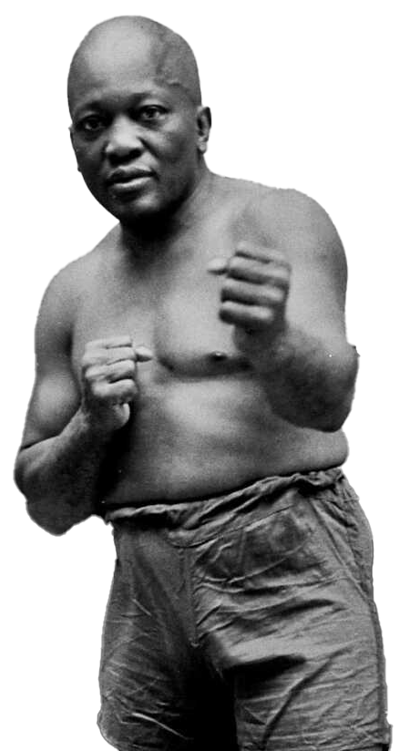
Filho de escravos, Jack Johnson sofreu com o preconceito durante toda sua carreira, recebendo o direito de lutar pelo título mundial dos pesados somente após se provar como o melhor boxeador negro e defender diversas vezes o posto de campeão mundial negro da categoria (sim, isso existia). Em 1908, Johnson venceu Tommy Burns e se tornou o primeiro negro a ser campeão mundial dos pesos pesados.
Apesar da vitória, seu estilo contragolpeador e a cor da sua pele foram motivos de diversas críticas e da descrença no mundo da luta. Dois anos depois, o então aposentado e invicto James Jeffries voltou aos ringues com a alcunha de “A Esperança Branca” para enfrentar Jack Jonhson. Enfrentando um lutador invicto e os insultos de uma plateia de 22 mil pessoas, Jack Johnson venceu Jeffries no 15º round. Uma lenda.
Willie Pep
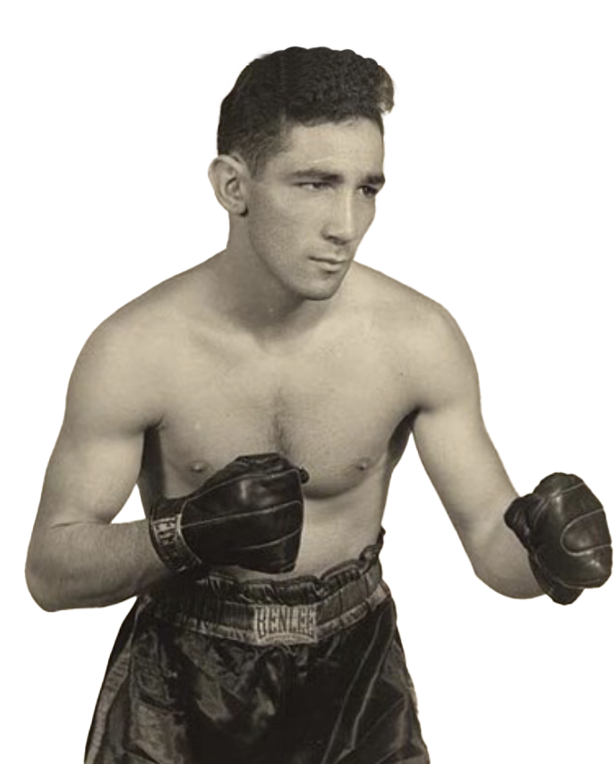
Considerado o maior peso pena da história do boxe, Willie Pep foi campeão pela primeira vez quando já ostentava uma carreira invicta com 54 vitórias. É o pugilista com o recorde de vitórias oficiais com absurdos 229 triunfos. Assim como Robinson, ele conquistou o cinturão da categoria por cinco vezes durante a carreira.
Em 1946, Pep atingiu a marca absurda de 18 combates num mesmo ano, vencendo todas as pelejas. Willie é conhecido pela absurda capacidade defensiva, construída com movimentação lateral e um jogo de pernas lendário. Existe uma lenda, jamais confirmada, que Pep venceu um round sem ter lançado um único soco contra o adversário.